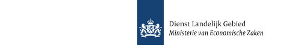

antenneregister op kaart viewer
Meest recente publicatie: 07-september-2013
|
Versie: 0.1-SNAPSHOT
Issues dashboard
|
Jenkins dashboard
Informatie
Home
Release notes
PDF documentatie
Installatie
Installatie handleiding
Deployments
CI deployed webapp
WCAG testing
CSS 3 validatie
CSS 2.1 validatie
HTML validatie
Links
Jenkins dashboard
Issues dashboard
Broncode
Project documentatie
Project informatie
Project rapporten
Dependency Updates Report
Plugin Updates Report
Developer Activity
File Activity
Change Log
GitHub Report
Follow gisdemo_agro_nl
File Activity Report
Changes between 2013-08-08 and 2013-09-08
Total commits: 0
Total number of files changed: 0
Filename
Number of Times Changed